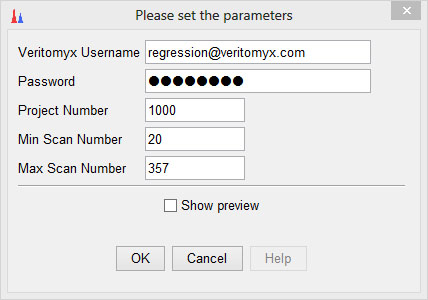

Veritomyx Centroid
Description
TBD
Method parameters
- Veritomyx Username
- Login name (email address) for Veritomyx SaaS.
- Password
- Password for access to Veritomyx SaaS.
- Project Number
- Veritomyx project number under which this job is to be run.
Your login must have access to this project.
Setting this to zero will use your default project.
- Min Scan Number
- First scan in scan range to centroid.
- Max Scan Number
- Last scan in scan range to centroid.
